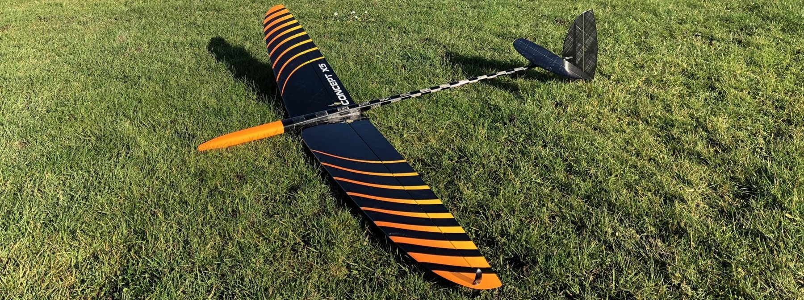
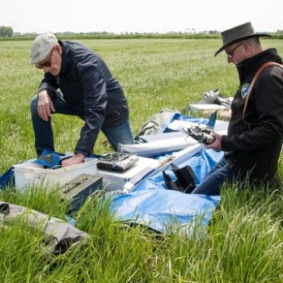
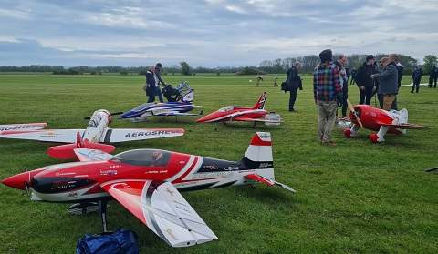
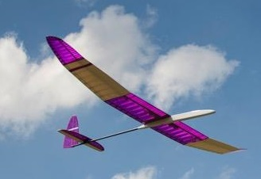
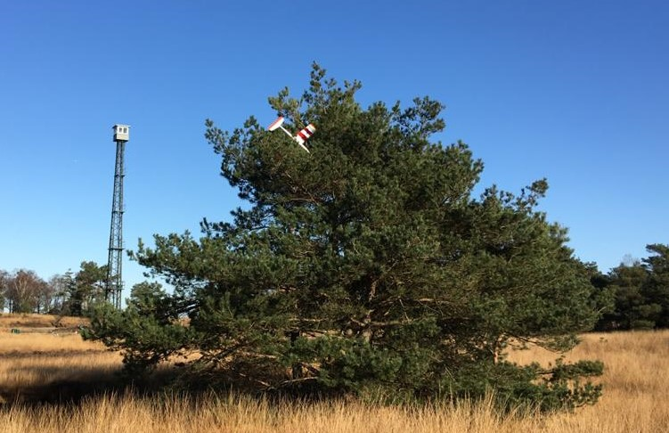
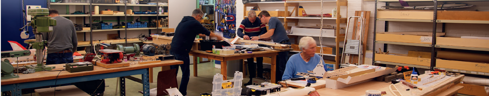
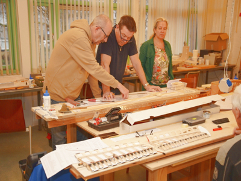
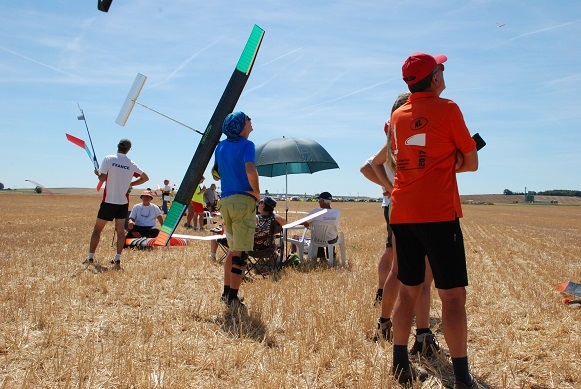

Verslagen en meer
Overig

Geweldige vliegavond!
Ready for take-off De kreet ‘Geweldige vliegavond’ was populair na een fijne avond modelvliegen bij de boer in Duiven. Een aantal ALC leden konden de…
Lees meer
Indoor vliegen met Split Stik
H et idee is dat we indoor kunnen vliegen met een eenvoudig te bouwen vliegtuig. Hier is veel lol aan te beleven en wat vliegvaardigheden op te doen…
Lees meer
DLG clinic
DLG clinic Op een fantastische mooie (thermiek technische) dag eind januari hebben een aantal leden van de Arnhemse Luchtvaart Club een clinic DLG…
Lees meer
Spirit 100 Maiden
( S pirit 100 Maiden geschreven door Paul ) Eindelijk is het dan zover. Na maanden bouwen en ondertussen starten met de bouw van nog twee…
Lees meer
Vliegdag ALC 8 mei 2023
Geïnspireerd door de NK RES-wedstrijd van zaterdag 6 mei op ons veld in Duiven besloten Hans en ik bij goed weer de maandag daarna te gaan vliegen.…
Lees meer
ProWing International 2023
Busje geregeld, 7 man van de Arnhemse Luchtvaart Club (ALC) erin, dagje uit naar Prowing Soest Bad Sassendorf in Duitsland zijn de ingrediënten voor…
Lees meer
RES Vliegen
R ES vliegen, ook wel F3RES of F3L, is een tak van sport om te vliegen met model zweefvliegtuigen met de eigenschappen : Maximale spanwijdte 2 meter…
Lees meer
RES Clinic Duiven 2022
Op het ALC vliegveld in Duiven zijn we tegen 13.00uur, op 26 Maart 2022, met z’n allen in de weer. Hans en voormalige secretaris van de club hebben…
Lees meer
Bouwverslag Hi Fly
Dick van der Kolk is al vele jaren actief bij de Arnhemse Luchtvaart Club (ALC). Zelf bouwen van je modellen is voor velen een belangrijk aspect van…
Lees meer
Brevet vliegen
Brevet vliegen bij de ALC. (Geschreven door Ruud de Haas) Eindelijk was het dan zover, vier leden van de ALC gaan vliegen voor het brevet rc…
Lees meer
Vliegterrein
Voor het vliegen wordt gebruik gemaakt van het Rozendaalse Veld, ten noordoosten van Arnhem. Dit heideterrein is vanwege de goede thermische…
Lees meer
Boerenkool dag
Elk Jaar houden we met de Arnhemse Luchtvaart Club (ALC) een boerenkool dag. Hetgeen betekent dat we de hele zaterdag op de club bouwen aan projecten…
Lees meer
Thomas CUP
Thomas Cup modelvliegwedstrijd Arnhemse Luchtvaart Club Op 10 juni a.s., met een uitwijkdatum op 17 juni a.s., wordt door de ALC de Thomas Cup vrije…
Lees meer